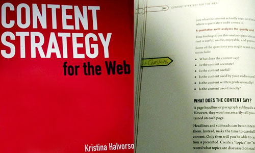

I sat down with @adactio of @clearleft to have a talk about what a site revamp entails, and typed up his advice into a word document on my laptop.
Before I left I was lent 'Content Strategy' by the lovely @eldevri of @clearleft. She advised me to use a short list of questions to ask my friend about the content of her site.
Over a lovely coffee, I had a really fun, if somewhat muddled, talk with my friend about her current site. She had printed off the pages on her site and showed me what content she had crossed out (almost all!). I told her I am glad she already understands the need to make site content concise. I wrote down notes on a cute little notebook I had recently bought for myself.
Today my friend sent me a link to this website. See above picture for what she likes about it. It was created with Wix and I found the desktop version to be alright...ish? The mobile version though? No way! So much to improve upon.
My friend told me she doesn't find it too fun writing about herself. I suggested the post-it note exercise (for laying out content in order of importance) and encouraged her to write a lot of content in a short amount of time so we can weed out the best stuff later on. Our talk also reminded me to do a mini research project on site comparisons.
Later in the day, I read about design personas for websites in Aarron Walter's book 'Designing for Emotion', published by 'A Book Apart'. Aarron (UX designer for Mailchimp) has helpfully created a design persona template for anyone to use.
My friend send me a cheerful message and this picture, telling me how she had been doing some content post-it notes (words blurred for privacy!). We plan to meet on Friday next week to work on these.
I attended a user experience night run by a nice couple who plan to launch a dinner party website called 'Dinner Circle' @JoinDCircle. The picture shows their web developers from @BoomSolutions. An intense but fascinating night!